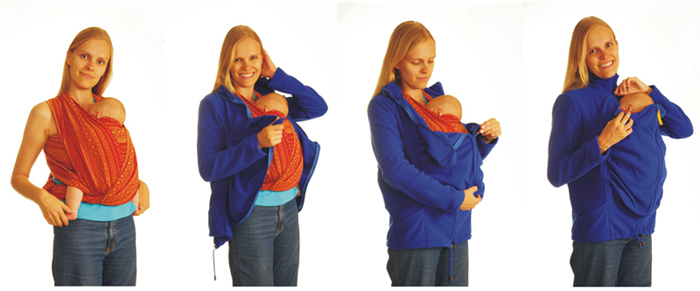
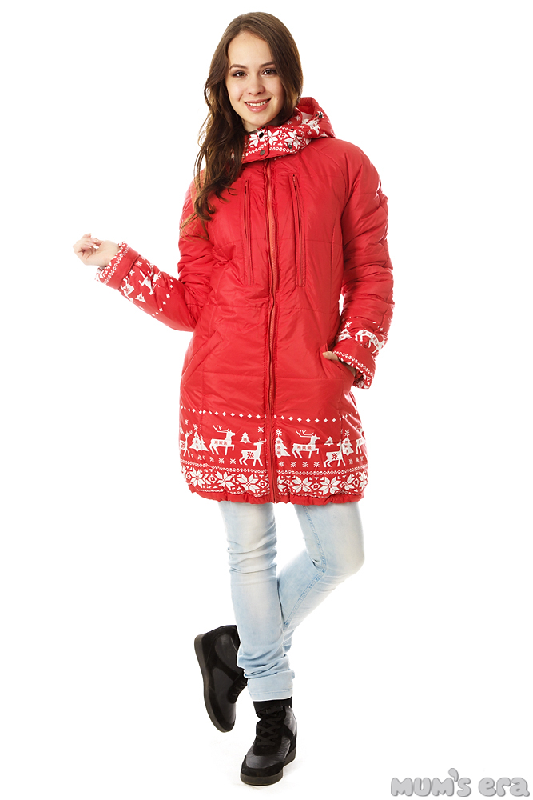
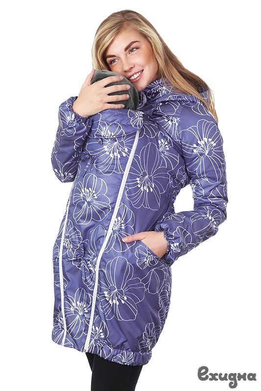

{kind=link}
{kind=link}
СЛИНГОКУРТКА
Слингокуртка - это одна куртка для двоих, мамы и малыша.
Что вообще такое "слингокуртка"? Этого слова нет в словаре! Верно подмечено! Узнать о том, что такое "слингокуртка", порой бывает не так-то просто. Не потому, что это какое-то тайное знание, а потому, что слингокуртка - это совсем недавно появившаяся специальная одежда, это куртка, имеющая две горловины и наиболее удобная для того, чтобы носить под ней малыша в слинге! Да, термин "слингокуртка" появился совсем недавно, буквально несколько лет назад (аккурат вместе с модой на ношение детей в слингах) - и поэтому пока о слингокуртках можно найти не так много информации, однако, сюда, на наш сайт, вы пришли как раз по правильному адресу!!! Ведь наша компания специализируется на производстве зимних и демисезонных слингокурток, первую из которых мы сшили еще в далеком 2007м году, став новаторами, теми, кто начал производство этой разновидности одежды в России! Стоит ли говорить, что за это время мы накопили огромный опыт в производстве слингокурток, испробовали массу вариантов конструкций вставки для куртки, и каждый сезон продолжали совершенствовать ее с учетом опыта прошедшего сезона - и все для того, чтобы сегодня предложить вам лучший товар по соотношению цена-качество на отечественном рынке (на котором, к слову, мы являемся признанными лидерами).
Что из себя представляет конструкция слингокуртки?
Это может быть или обычная куртка с отстегивающейся/пристегивающейся вновь вставкой, позволяющей носить малыша в слинге под курткой - в случае, когда вставка отстегнута, куртка может использоваться как самая обыкновенная верхняя одежда (то есть куртка прослужит вам и после окончания "ручного периода" вашего ребенка, когда у него уже не будет потребности постоянно быть рядом с мамой). Или куртка со вшитой (не отстегивающейся) вставкой, которая является специализированной курткой и не может быть использована, если на вас нет ребенка в слинге.
Обязательно ли под курткой должен быть слинг? Может ли куртка сама держать ребенка?
Это очень правильный и очень важный вопрос! При покупке куртки нужно четко понимать, что куртка сама по себе НЕ является средством переноски ребенка! Куртка сама по себе НЕ держит ребенка! Ребенок под курткой обязательно должен располагаться в какой-либо переноске. От себя мы, конечно, в первую очередь советуем использовать слинги (слинг-шарф, май-слинг или слинг-рюкзак), однако, вы также можете носить под курткой ребенка в "кенгурушке" или других нефизиологичных переносках, хотя, прежде чем делать это, мы бы очень рекомендовали вам изучить на нашем сайте материал, посвященный сравнительному анализу анатомичных переносок (слингов) и "кенгурушек" - и лишь после этого принимать осознанное решение о том, какой именно переноске вы доверяете безопасность и здоровье вашего малыша!
Итак, под курткой ребенок обязательно должен быть надежно зафискирован переноской. На фото ниже вы можете видеть, например, как это выглядит - сначала мама усадила своего малыша в слинг, после чего надела поверх слингокуртку. К слову сказать, 8-месячный ребенок, оказавшись в слинге, практически сразу заснул, так что слингокуртку бодрствующая мама надевала уже на спящего ребенка, ничуть его не потревожив! А вы разве еще сомневаетесь, что слингокуртка - это удобно?


Зимняя слингокуртка "Ехидна" ("Мать-ехидна") - в чем ее главные достоинства?
В зимней слингокуртке вы сможете продолжать с комфортом носить вашего малыша в слинге в любую погоду и в любое холодное время года - осенью, зимой или ранней весной. Малыша не нужно будет одевать в сто одежек - ведь под маминой курткой и прижатый к маминому телу, он получает так много тепла от самой мамы, что толстые неудобные зимние комбинезоны на овчине ему больше не понадобятся! Удобный фасон наших зимних слингокурток оценят и мама, и ребенок. Верх куртки - плащевка, утеплитель - холлофайбер или термофинн 200 г\м2 (в зависимости от конкретной куртки), внутри - подкладочная ткань. Оптимальна для ношения вместе с ребенком при температуре воздуха от 0 до -25 градусов. Вставка отстегивается. На вставке предусмотрена дополнительная разъемная молния между горловиной мамы и горловиной малыша. Носить малыша под этой слингокурткой не только удобно, но и невероятно экономно! Ребенку не понадобится дорогостоящий и громоздкий зимний комбинезон, потому что под вашей курткой его будет греть и сама куртка, и вы (обычно ваша температура тела бывает не ниже 36 градусов по Цельсию). Эта куртка примечательна еще и тем, что ее можно использовать как для ношения малыша в слинге, так и просто как самостоятельную вещь. Вставку можно отстегнуть и убрать в шкаф насовсем, а курткой продолжать пользоваться еще долгое время после того, как вы закончите носить малыша в слинге. Капюшон с кулиской для мамы, капюшон с кулиской для малыша - и оба эти капюшона на молнии, то есть их можно также отстегнуть и не использовать.
Слингокуртка-ветровка "Ехидна" - что в ней особенного?
Слингокуртки-ветровки и демисезонные слингокуртки ТМ"Ехидна" являются "трансформерами" - вставка для ношения малыша отстегивается - и куртку можно использовать как обычную ветровку. Во вставке имеется молния между горловиной мамы и малыша. Наружняя ткань - плащевка, внутренняя ткань - флис плотностью от 180г/м2 до 330 г/м2 (см. описание каждой отдельной взятой куртки). Ветровка со вставкой рассчитана на использование при средней температуре воздуха от 0 до +15 градусов (это наша рекомендация как производителей), однако, некоторые наши клиенты носят наши слинговетровки и при температурах ниже нуля и считают, что куртка очень комфортна при температуре вплоть до -5 градусов. Для пошива наших курток мы используем водоотталкивающую ткань, поэтому, спрятавшись под капюшоны этой куртки, вы с малышом не будете бояться никаких природных катаклизмов в виде неожиданной грозы, дождя, сырости или еще невесть чего!
Флисовая слингокуртка.
Это незаменимая одежда для слингомамы, востребованная круглый год. Зимой флисовую слингокуртку можно использовать как поддеву под зимнюю куртку. Весной и осенью - как самостоятельную единицу одежды. Флисовая куртка пригодится даже летом, прохладными вечерами!
Коллектив нашей компании от души желает вам приятного и комфортного ношения малыша в слинге, а со слингокуртками "Ехидна" это вам совершенно гарантировано в любую погоду!